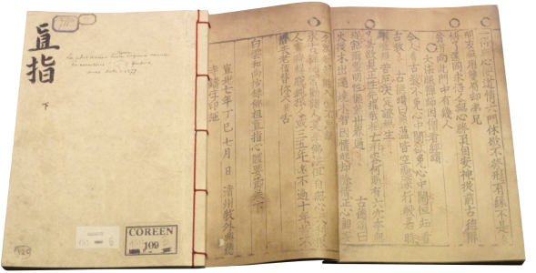

1번
다음 내용 중 알맞은 것을 고르세요.
고려 문화유산 『직지심체요절』 어디까지 알고 있니?

1377년 세계에서 가장 오래된 금속활자 인쇄본, 『직지심체요절(직지)』이 만들어졌다! 직지는
1
세종이 장영실 등 과학자와 기술자에게 금속활자를 만들게 시키면서 인쇄된 책
으로
2
한자뿐만 아니라 한글 활자도 만들어 찍을 수 있었다.
직지의 내용은
3
백성들이 농사를 잘 지을 수 각 지방의 농사법을 적어놓은 것
으로 농업 중심 사회였던 고려 시대 백성들에게 큰 도움을 주었다.
4
백성들이 이해하기 쉽도록 그림도 함께 그렸으며
우수성을 인정받아
5
현재 유네스코 세계 기록 유산으로 등재되어있다.
#직지심체요절 #금속활자 #고려문화유산